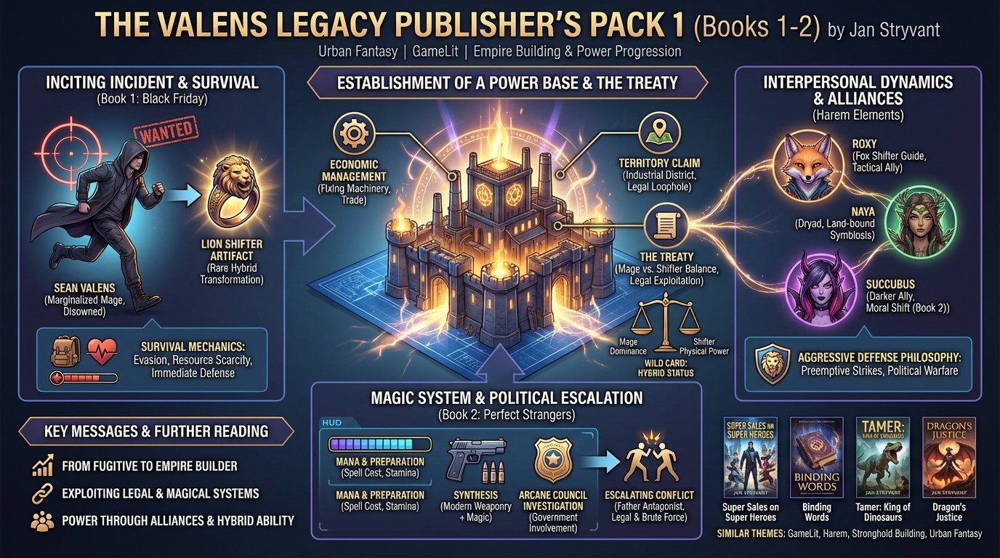

!The Valens Legacy Publisher’s Pack 1 (The Valens Legacy, #1-2) by Jan Stryvant isbn-13:
Audible
AI Generated Content
Generated by gemini-3-pro-preview

Book Summary: The Valens Legacy Publisher’s Pack 1 Author: Jan Stryvant Contains: Black Friday (Book 1) and Perfect Strangers (Book 2)
Overview This collection comprises the first two installments of The Valens Legacy, an urban fantasy series set in a contemporary world where magic and supernatural creatures exist alongside modern technology. The narrative follows Sean Valens, a marginalized magic user who navigates political intrigue, assassination attempts, and the awakening of dormant powers. The series is characterized by its “GameLit” and harem genre elements, focusing on the protagonist’s accumulation of power, territory, and allies.
Key Narrative Points and Themes
- The Inciting Incident and Survival
- The protagonist, Sean Valens, is introduced as the disowned son of a powerful magical leader. Considered magically weak and a liability, he is targeted for execution by his father on “Black Friday.”
- Sean survives the assassination attempt and inadvertently bonds with a magical artifact (a ring) belonging to a long-dead, powerful shifter lineage. This event triggers his transformation into a Lion shifter, a rare and formidable class of magical being.
- The narrative focuses heavily on immediate survival mechanics, detailing Sean’s evasion of pursuit and his initial lack of resources.
- World-Building and The Treaty
- The setting is governed by “The Treaty,” a complex set of laws regulating interactions between humans, mages, and shifters (Lycanthropes).
- Mages are depicted as politically dominant but physically vulnerable, while shifters are physically powerful but historically marginalized.
- Sean’s unique status as a hybrid—possessing both the ability to cast spells and the physical attributes of a Lion shifter—disrupts the established power balance, making him a “wild card” in regional politics.
- Establishment of a Power Base
- A central theme of the series is empire-building. Sean moves from a homeless fugitive to a property owner establishing a stronghold.
- In Black Friday, Sean secures a physical base of operations within an industrial district, utilizing the Treaty laws to claim territory that his father cannot legally attack without provoking government intervention.
- Economic management is a subplot; Sean utilizes his magic to fix machinery and trade goods to fund his defense, shifting the narrative from pure combat to logistical management.
- Interpersonal Dynamics and Alliances
- The series operates within the harem sub-genre. Sean forms alliances with various supernatural women who have been cast out or marginalized by the traditional magical society.
- Roxy: A fox shifter who serves as Sean’s primary guide to the supernatural underworld and his first tactical ally.
- Naya: A dryad bound to the land Sean purchases; her integration highlights the symbiotic relationship between the protagonist and his territory.
- In Perfect Strangers (Book 2), the circle of allies expands to include darker supernatural entities, specifically a succubus, necessitating a shift in Sean’s moral framework and tactical approach.
- Political Escalation and Conflict
- Book 2, Perfect Strangers, shifts the conflict from personal survival to political warfare. The government’s magical enforcement agency (The Arcane Council) becomes involved, investigating the disturbance caused by Sean’s rising power.
- The antagonist is primarily Sean’s father, leading to a series of escalating skirmishes. The conflict is resolved not just through brute force, but by exploiting legal loopholes in the Treaty.
- The protagonist adopts a philosophy of “aggressive defense,” deciding to eliminate threats preemptively rather than waiting to be hunted.
- Magic System Mechanics
- The magic system relies on “mana” and preparation. The books detail the mechanics of spell preparation, the cost of magic on the user’s stamina, and the specific advantages of Lycanthropy (regeneration, enhanced senses).
- The synthesis of modern weaponry (firearms) with magical enhancement is a recurring tactical motif used by the protagonist.
Further Reading
- Super Sales on Super Heroes by William D. Arand
- Similarities: Focuses on a protagonist building a corporation/empire with a team of super-powered allies; blends modern settings with fantasy/sci-fi elements.
- Binding Words by Daniel Schinhofen
- Similarities: Features a protagonist transported to a fantasy setting who must rely on binding oaths and building a close-knit group of allies for survival.
- Tamer: King of Dinosaurs by Michael-Scott Earle
- Similarities: A survival-focused narrative where the protagonist manages resources, builds a stronghold, and leads a group of female warriors, though set in a prehistoric rather than urban environment.
- Dragon’s Justice by Bruce Sentar
- Similarities: Urban fantasy involving a protagonist who discovers a rare shifter heritage (dragon) and navigates a complex supernatural political landscape.